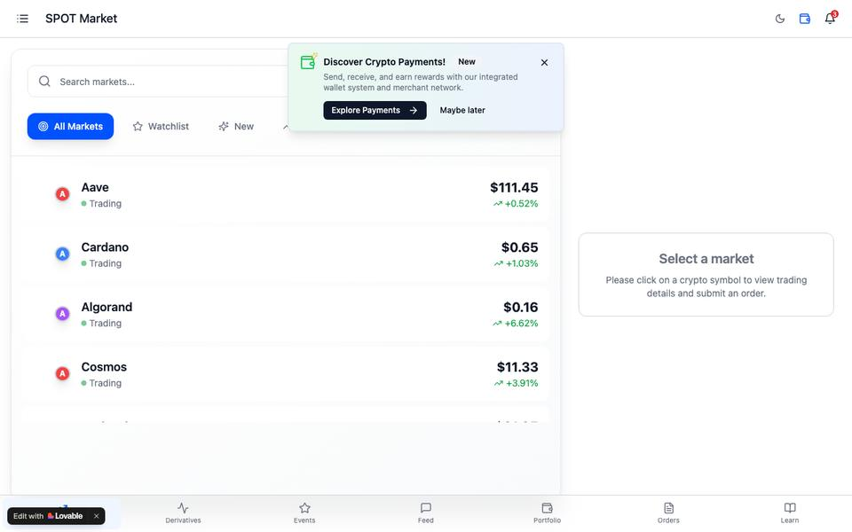
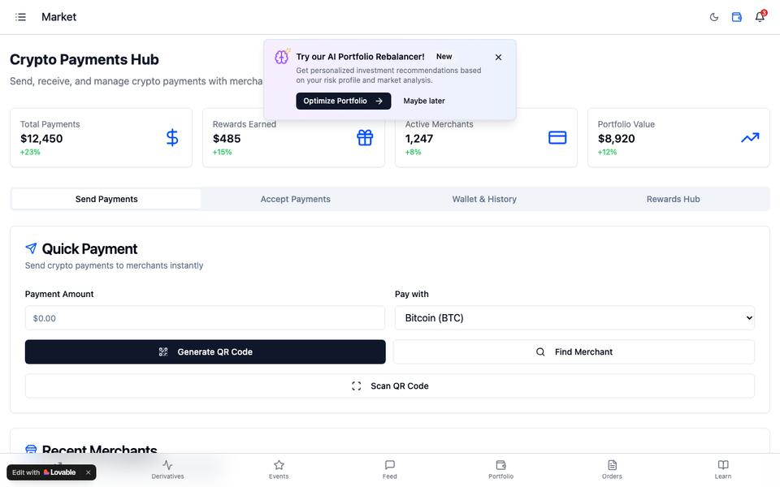
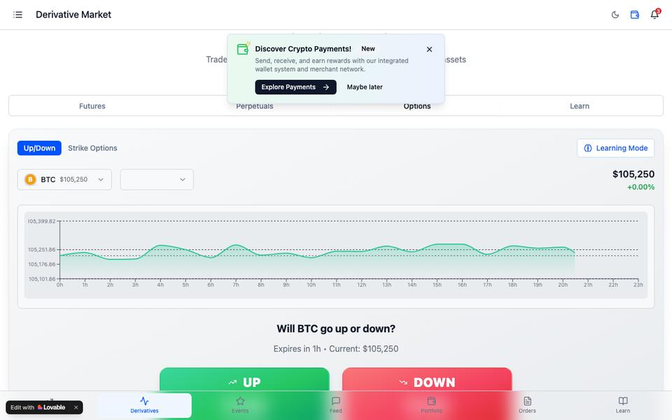

Retail experience, re-read
Coinbase, re-read
The product line is broad — US futures included, since ~2023. The gaps are in the retail experience: discover, understand, practise.
Concept prototype — illustrative data



Premise
For millions, Coinbase isn’t an exchange — it’s what crypto looks like. That makes the retail experience a public utility in a way the roadmap isn’t.
Why it’s hard
Revenue points at power users, so the interface drifts toward people who already trade. This POC serves the opposite persona: five anxious decisions a year.
The insight
Every addition rebuilds a path to something that already exists: find it in context, grasp it in plain language, rehearse it with nothing at stake.
Five surfaces, one persona
Discover → understand → practise → fund.
North star: paper → funded conversion. ★
Volume and DAU are maximised by the power users this isn’t for — one churning day-trader beats a hundred careful newcomers on both. A user who practised, passed the quiz, then committed real money is confidence built and cashed.
time-to-comprehension90-day newcomer retentionsupport contacts per feature